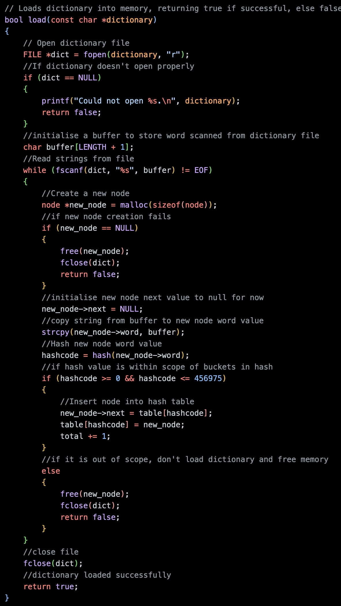
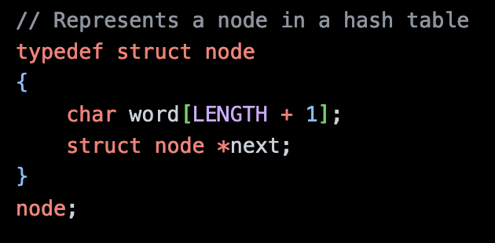
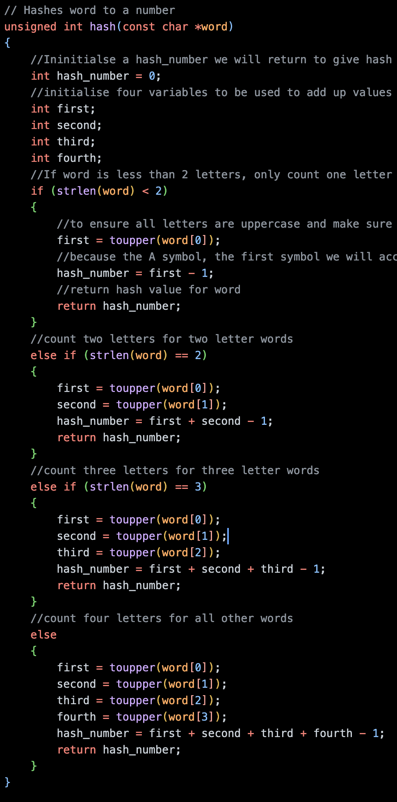
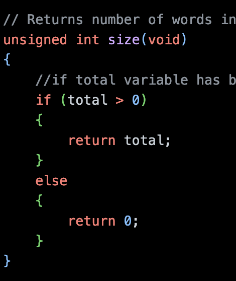
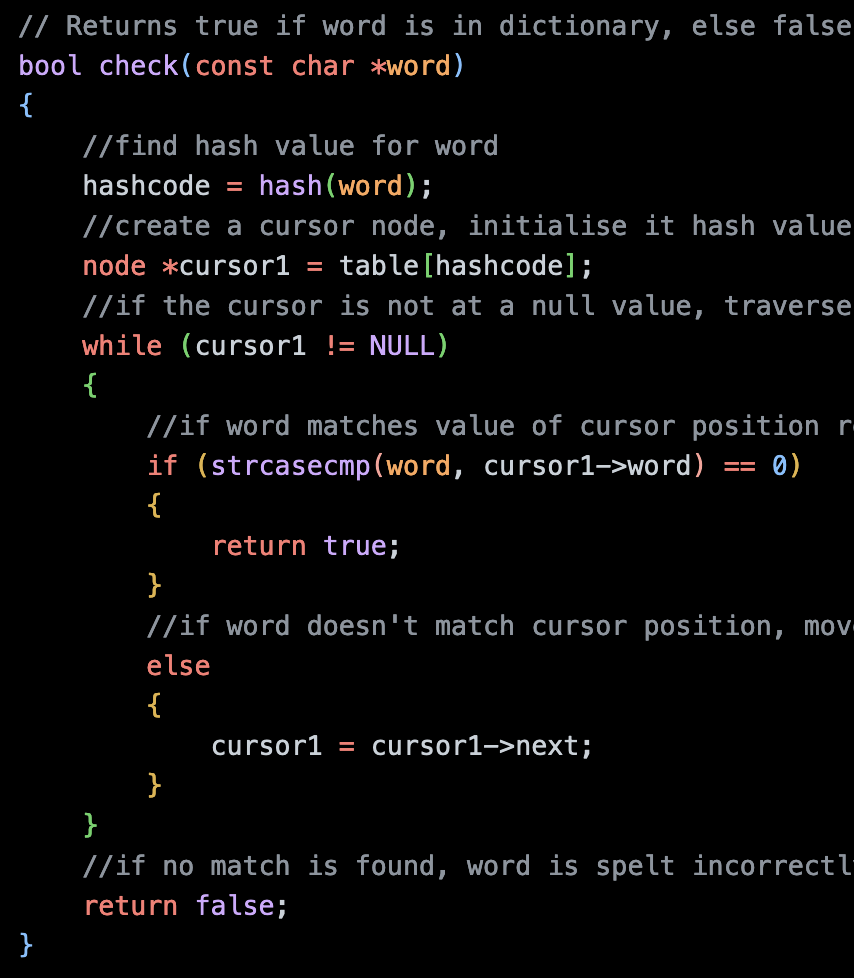
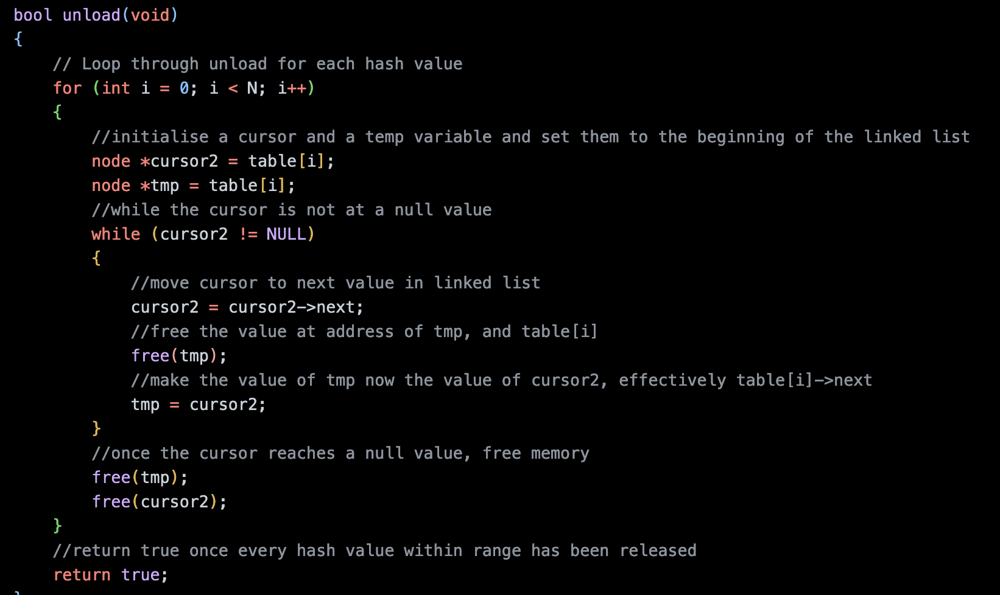
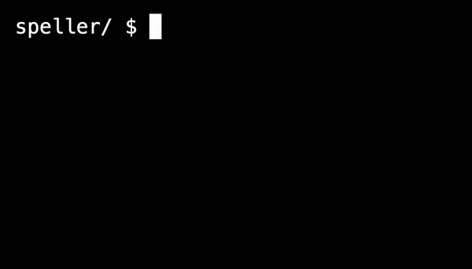

Friday, 10th of MARCH
C U L8R
Lab - Inheritance
In this lab we were asked to write a program which allocated alleles to individuals to determine their blood-type. Starting with a child, we allocated their two bloody-type alleles, one from each parent at random. We also allocate their parent's alleles from the child's grandparents, using the same process of one from each. For the grandparents, for both of their alleles we allocated one of three alleles using a randomly generated integer. the While initially daunting, this lab ended up being quite easy to complete. The only issue I came across was a small error, although it took my a while to identify.
I was able to allocate memory for each new person structure, and then set the values for each of the new person's variables, however I was not returning these values and thus not populating each new person into the family tree.
Once I changed the return NULL at the end of the create family function, I was able to return new_person and my succeeded.
It was just a matter of not reading all the supplied code throughly, because I had overlooked the TODO of changing what the function returned.
Just as an extra tidbit, I was receiving a valgrind error and segmentation dump because I was not freeing the memory used for current person, because my freeing function was working on the p structure, which was not linked to the current person structure while I wasn't returning it from create family.
Once I returned the current person from the function, it was then linked to the p structure in a following function. I then didn't need to free the memory used by current person directly. This was managed by using the free function with p as the argument.
Problem Sets - Speller
Speller is the final and holy mother of all C problem sets in CS50x. We are expected to check every word in supplied text files for a counterpart in a supplied dictionary by using a hash table, thus spell-checking the entire text. We were challenged to not only design a program that works, but one that works quickly. The design of our hashing function, that is, the function which determines the hash value for each word, will have the biggest impact on our program's runtime. We will have to put into practice our understanding of data structures and managing memory allocation versus runtime from this week's lecture as well as all the concepts covered in the previous six weeks.
We were supplied with a large amount of distribution code off the bat. We were provided with a speller file, which calls five functions whose prototypes were called in a dictionary.h file. The speller file also deals with keeping track of the time taken to run program, and whether each text's words were correctly identified as misspelt, as well as a few other parameters. As with the smiley and filter problem sets from last week, we are also provided with a Makefile which ensures all files are compiled together when make is run. The only provided file we needed to work on was dictionary.c, which is where we will implement the five functions provided to speller by dictionary.h.
The five functions are: load, hash, size, check, and unload. To complete these five functions I needed to utilise all my learning from previous weeks. In load, we will load the words from the provided dictionary into a data structure, like a hash table, which is held in memory. In hash, which is itself called in load and check, we take a word and determine a hash value for it. This is the function which dictates how our data will be structured. In size, we return the number of words of our dictionary. In check, we will take a word and check if it is in our data structure. In unload, we will free all memory allocated in the data structure.
Hash

In load we used the fopen command with the “r” argument to open a file, which I named dict, for reading. If this file opened and was null, we knew that fopen failed and so returned false, ending the function. Otherwise, we we created a buffer array to store each word from the dictionary file temporarily in order to load it into memory. As long as we were not at the end of file of “dict”, we read a string into the buffer - starting from the first string of the file, incrementing by one each scan.
While each word was in the buffer, we created a new a node pointer which pointed to a chunk of memory which was the size of a node structure. We initialed the next value within that new node to point to null and then copied the value from the buffer to the word value in the new node. The node structure was defined with the following code.

In the next part of the load function we generated a hash code for the new-node's word value, by calling the hash function, explained in the following section.
Once the hash code was generated, provided it was within the range of accepted number of buckets specified at the beginning of dictionary.c, we loaded the node into the hash table. We used the hash code produced to go to that bucket in the hash table, and prepended the new node to the beginning of the list. We needed to make sure the first step we took when prepending the new node was setting the next pointer to the same as the current header, ensuring any trailing nodes were not lost. After that step we could then change the header pointer to point to the new node's address. Once this step was complete we also incremented the total variable by one, which we would use later in the size function.
Hash

In my first hash function I took only the first letter of every word and returned it its corresponding hash value from 0 to 25. This worked okay, it was about ten times slower than the solution offered by the CS50x staff so I tried to improve my hashing function to cut down the time. Eventually I went with the solution below. This function took up to the first four values of the word depending on its length, and added those values up. I increased the constant number of buckets available to my hash table and I did find I increased the speed by about 4 times.
Something to note is that in order for a word to always return the same hash value, we needed to treat a word as being in the same case for all situations. This is because a word with any letter in a uppercase results in a different hash value from the same word in lowercase, as an uppercase character returns a different decimal value.
However, writing this, I realised that my algorithm would have lead to many collisions between different words, which is what prevented me from reaching similar speeds to the staff. I found a suitable hash function in a YouTube video by Rob Edwards called 'Hashes 3 Hash Functions for Strings' (https://www.youtube.com/watch?v=jtMwp0FqEcg) and found a better option which did cut my speeds down to match the staff.
This function started by initialising a constant (31, chosen due to being a prime number) and the hash code value (zero). For each character in the string, the hash code was updated to equal the constant times the current value of the dashcode plus the decimal value of the letter. In case the returned hashcode was larger than the number of buckets in my hash table, set in the N constant, I divided the value by the modulus operator (%) which returns the remainder after an integer division.
Size

The size function was a simple one to implement. All I needed was to return the total variable which had been incremented every time a word was loaded into my hash table.
Check

The check function took each word from the text and checked if it was in my hash table. In order to implement this, I needed to first check which bucket of my hash table this word would be. To do so, I called the hash function again. This is why my hash function needed to be deterministic, that is, always returned the same result for the same word and also return the same result for the same letter in different cases, because the word could appear in a different form than it's it did in the provided dictionary.
By knowing I received the correct hash value, I was then able to traverse my bucket and confidently determine if the word appeared in my dictionary. To traverse through the linked list of each, I needed to initialise a new node, which I called cursor, which kept track of my current value and its location in the list. As long as this cursor was not a null location, I case-insensitively compared the text word with the word value at the current cursor node. If there was a match, I returned true. If not, I moved the cursor to the location pointed to by the cursor->next pointer, and if this was not null, repeated the comparing process. This was repeated until the end of the link list was reached and false was returned, or a match was found.
Unload

The final function to implement was unload. This function was needed to free all the memory used by hash table and prevent memory leaks when the program ended. This implementation used a similar principle to check, in that I needed to use a cursor to keep track of my location. However, I also needed a second new node, which I called temporary, because if I was try to free the memory at the cursor node, I would subsequently lose the cursor->next pointer.
So I needed to iterate through a for loop, the same number of times as the constant number of bucket values set by N. For each iteration, I traversed each linked list in my hash table, initialising the two nodes, and started from the beginning of the list. I made both nodes equal to the address of my bucket header. I then moved the cursor to the address pointed to by cursor->next. I then was able to free the memory at temporary. I then made the now empty temporary node equal to the cursor again, repeating the process of moving cursor and freeing temporary. This was repeated for each link list until cursor held a NULL value.
